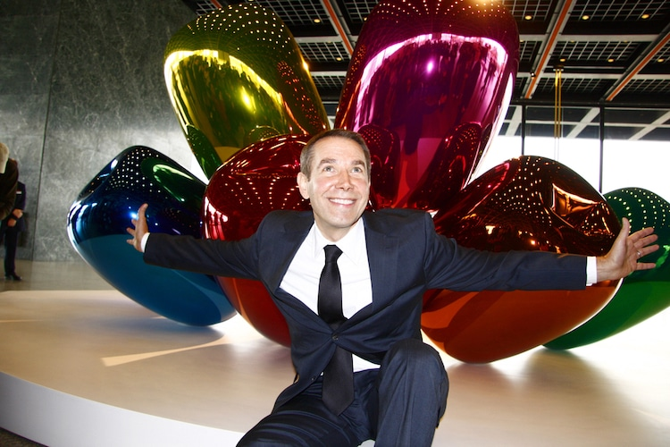
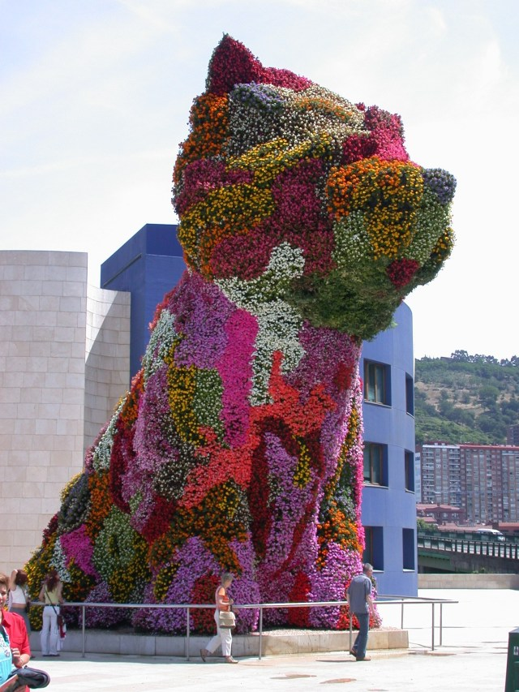
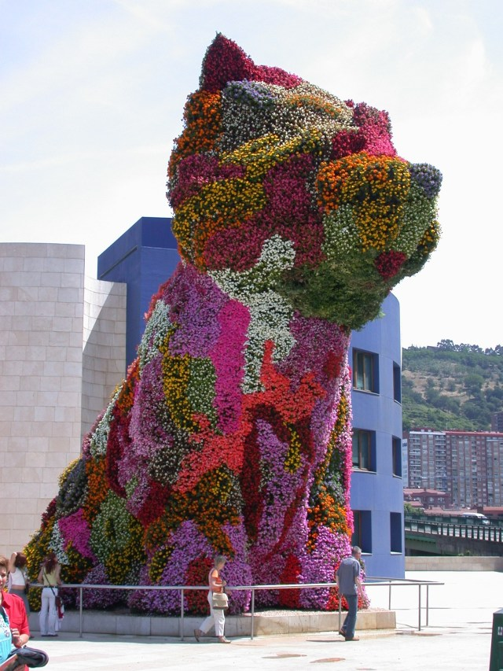
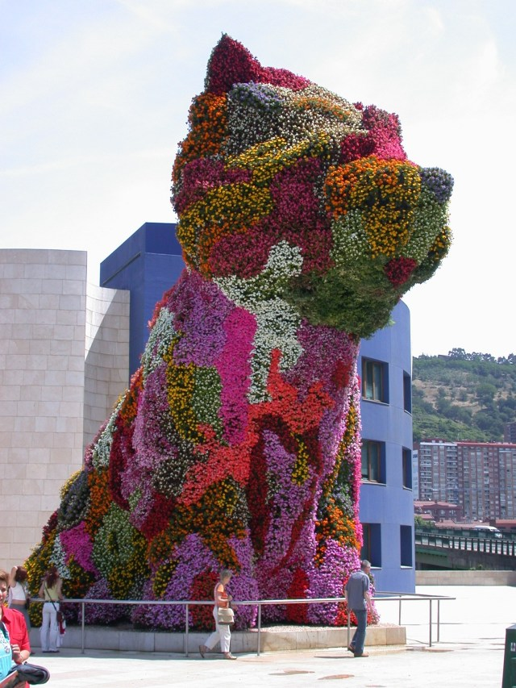
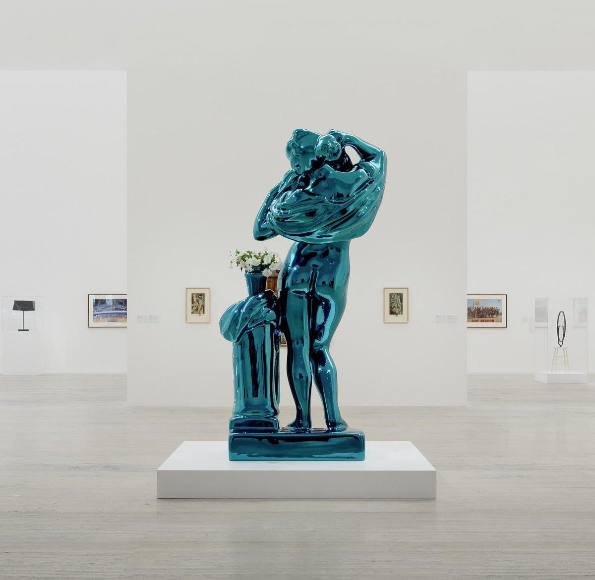
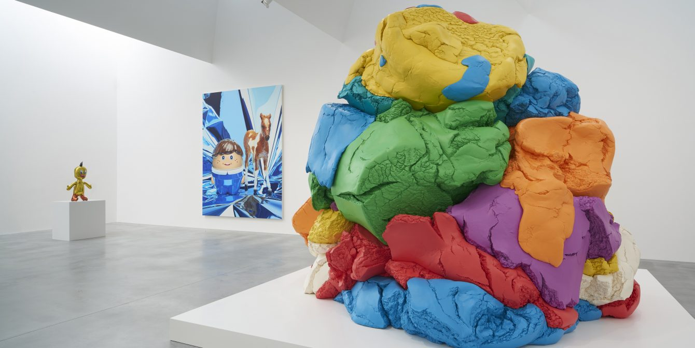
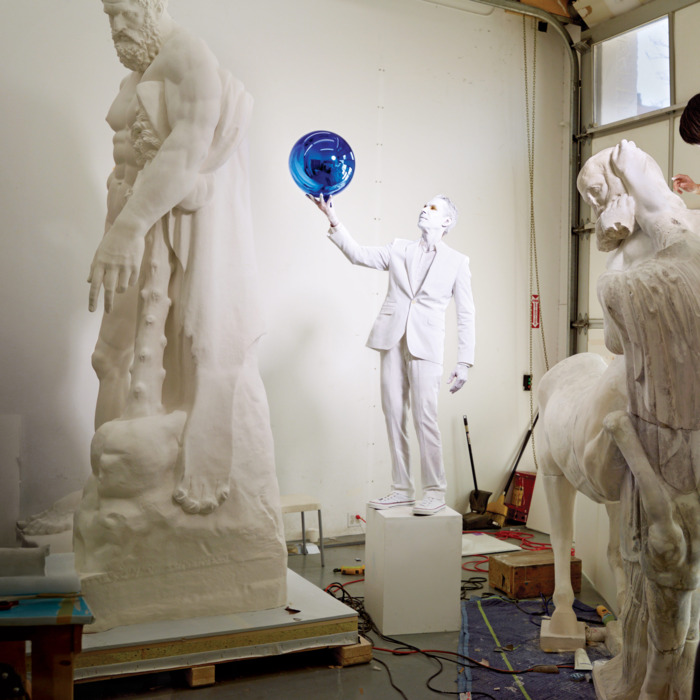
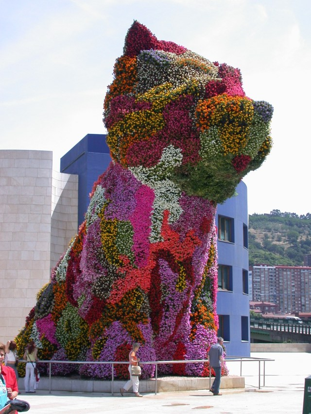

 






Jeffrey Koons (born January 21, 1955) is an American artist recognized for his work dealing with popular culture and his sculptures depicting everyday objects, including balloon animals — produced in stainless steel with mirror-finish surfaces. He lives and works in both New York City and his hometown of York, Pennsylvania.
Jeff Koons rose to prominence in the mid-1980s as part of a generation of artists exploring the meaning of art and spectacle in a media-saturated era. With his stated artistic intention to “communicate with the masses,” Koons makes use of conceptual constructs—including the ancient, the everyday, and the sublime—creating luxurious icons and elaborate tableaux, which, beneath their captivating exteriors, engage the viewer in a metaphysical dialogue with cultural history.
During the mid-1990s, Koons expanded his Pop sensibility through the Celebration series (1994–): hyperrealistic, brightly colored paintings and large-scale sculptures depicting vernacular images and forms such as plastic figurines, Play-Doh, and jewelry. Conflating the readymade and the monumental, these works attest to Koons’s ongoing fascination with childlike consciousness and communication; transforming humble objects into abstract symbols of transcendence and the biological. In 2000, seven new works by Koons debuted at the Deutsche Guggenheim: the Easyfun-Ethereal paintings. Derived from the optimistic, colorful Easyfun series (1999–2000), these layered, collage-like tableaux depict cut-out photographs of packaged foods, paradisiacal landscapes, and fragments of women’s faces, limbs, hair, clothing, and accessories. Attesting to Koons’s interest in the simple pleasures of visual culture, Easyfun-Ethereal would eventually be expanded to twenty-four paintings, presenting uncanny, imaginative panoramas.
Critics are sharply divided in their views of Koons. Some view his work as pioneering and of major art-historical importance. Others dismiss his work as kitsch, crass, and based on cynical self-merchandising. Koons has stated that there are no hidden meanings in his works, nor any critiques.